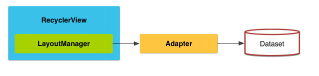

Universidad Centroamericana "José Simeón Cañas".
Programación de dispositivos móviles.
Ciclo 01/19.
Laboratorio 04.
Viernes, 05 de abril de 2019.
Temario:
Conceptualización del manejo visual de listas a través de RecyclerView’s, ahondando en su filosofía de diseño.
Implementación visual de la información adaptada dentro del RecyclerView a través de CardView’s.
Implementación de interfaces de usuarios orientadas a el manejo de grandes cantidades de información.
Métodos de manipulación de datos.
Objetivos:
Comprender la filosofía de diseño de un RecyclerView, y porqué su utilización es importante para el manejo de grandes cantidades de información.
Manejar gráficamente la información de una lista haciendo uso de las clases referentes al uso del RecyclerView.
Implementar interfaces de usuario amigables haciendo uso de los recursos proporcionados por el CardView.
Recycler View.
Manejo de grandes cantidades de información.
Introducción
Un RecyclerView es un contenedor para mostrar grandes conjuntos de datos (o que cambian frecuentemente), de manera eficiente y fácilmente accesible. Este trabaja con el patrón de diseño ViewHolder, que nos permite acceder a cada elemento de la lista de vistas sin necesidad de estar llamando al método findViewById(); además implementa el patrón Adapter, que nos permite ensamblar y relacionar el set de datos con la UI.

El uso de este método, permite una facil administración, tanto individual como colectiva, de un conjunto masivo de datos; además el diseño de las aplicacones se acopla a la especificación de Material Design implementada por Google. Partiendo de todos estos patrones, la implementación del RecyclerView se auxilia de las siguientes clases:
RecyclerView.ViewHolder
Un ViewHolder representa la vista de algún elemento en específico, y la metadata sobre su ubicación dentro del RecyclerView. A partir de este se controlan los aspecitos fundamentales de un elemento en el set datos que manipula el RecyclerView.
Esta es una clase que es definida dentro del adaptador, lo cual sirve de modelo para dar una sola linea de diseño a la lista de datos. Además nos permite obtener el contexto en el que es ejecutado el RecyclerView, permitiendo mantener los estándares de no obtener contextos a partir de parametros.
Ejemplo de implementación de un ViewHolder:
class MyViewHolder(itemView: View): RecyclerView.ViewHolder(itemView) {
/*
Métodos para controlar la vista de un objeto en específico
*/
}
Los adaptadores proporcionan una relación, desde un conjunto de datos específicos de la aplicación, a las vistas que se muestran dentro de RecyclerView. Esto permite y facilita la personalización y asignación de valores a la vista a partir de la parte lógica de la aplicación.
Este implementa tres métodos, que ayudan al RecyclerView a controlar el flujo de la información. Estos son:
OnCreateViewHolder: Este método está encargado de inflar cada uno de los items en la vista con respecto al set de datos proporcionados. Esta vista esta representada como un ViewHolder, con el fin de ser fácilmente personalizable desde el mismo Adapter.
getItemCount: Este método debe de retornar la cantidad de elementos a inflar. Este número debe de coincidir con el conteo de los elementos dentro de nuestro conjunto de datos.
onBindViewHolder: Este método es responsable de ensamblar un elemento de la vista (Manejado a través de un ViewHolder) con la información de un item que se encuentre en el conjunto de datos.
Ejemplo de implementación de un Adapter:
class MyRVAdapter(var objectsList: List<Object>): RecyclerView.Adapter<MyRVAdapter.MyViewHolder>() {
override fun onCreateViewHolder(parent: ViewGroup, viewType: Int): MyViewHolder {
val view = LayoutInflater.from(parent.context).inflate(R.layout.resource_layout, parent, false)
return MyViewHolder(view)
}
override fun getItemCount() = objectsList.size
override fun onBindViewHolder(holder: MyViewHolder, position: Int){
/*
Lógica para manejar un item específico
*/
}
class MyViewHolder(itemView: View): RecyclerView.ViewHolder(itemView) {
/*
Métodos para controlar la vista de un objeto en específico
*/
}
}
Un LayoutManager es responsable de medir y posicionar las vistas de elementos dentro del RecyclerView, así como de determinar la política de cuándo reciclar las vistas de elementos que ya no son visibles para el usuario. Al cambiar el LayoutManager, se puede utilizar un RecyclerView para implementar una lista de desplazamiento vertical estándar, un grid uniforme, grid escalonado, colecciones de desplazamiento horizontal y más. Esto elementos ya se encuentran creados y listos para su uso; aunque se pueden personalizar y crear un LayoutManager que se acople a cualquier diseño de UI.
RecyclerView introduce un nivel adicional de abstracción entre RecyclerView.Adapter y RecyclerView.LayoutManager para poder detectar cambios de conjuntos de datos durante un cálculo de diseño. Esto evita que LayoutManager siga los cambios del adaptador para calcular las animaciones. También ayuda con el rendimiento porque todas las conexiones de vista ocurren al mismo tiempo y se evitan las innecesarias.
Por esta razón, hay dos tipos de métodos relacionados con la posición en RecyclerView:
Posición del layout: Posición de un elemento en el último cálculo de diseño. Esta es la posición desde la perspectiva del LayoutManager.
Posición del adapter: Posición de un elemento en el adaptador. Esta es la posición desde la perspectiva del Adaptador.
Se hará uso de estos métodos cuando se este trabajando con posiciones del adaptador actualizadas, aún cuando estas todavía no sean reflejadas en el diseño del RecyclerView.
Normalmente el uso de clickListeners es realizado donde se tenga la referencia del boton o vista al cual se le implementará. En el caso de un elemento individual dentro de un RecyclerView esta referencia se encuentra en el Adapter, y mas específicamente en el ViewHolder.
Por estándares y buenas prácticas, dentro de un Adapter no deben de existir referencias a contextos, o definiciones de Listeners; por lo que se recomienda el uso de la abstracción para su implementación.
Existen muchos métodos para lograr implementar los listeners en el Adaptador, desde el uso de métodos abstractos para su posterior definición en Java, hasta el uso de funciones como parametros en Kotlin. A continución se presenta un enlace donde se ahonda mas en este tema, y presenta soluciones a esta situación, haciendo uso de kotlin.
El siguiente ejemplo consistirá en realizar un catálogo de películas. Este será alimentado por la API OMDB, la cual se necesita un registro para poder hacer uso de ella (Registro: enlace aquí ).
La aplicación contendrá una barra buscadora, que consumirá la API de tal forma que el nombre de la película que se ingrese, en caso de existir, esta se agregue con la información general en el RecyclerView; caso contrario muestre un error en pantalla.
Además se podrá dar click a una película en específico, y ver un detalle de la misma en otra pantalla de la aplicación.